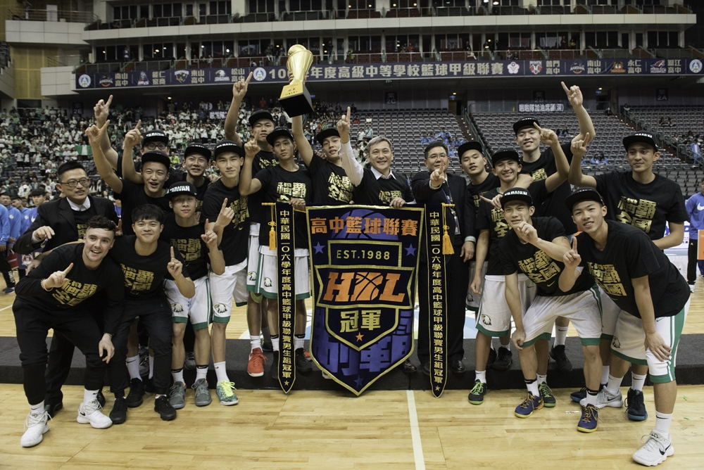

榮耀背後不為人知的辛苦
──籃球隊特別企劃
「比賽時間剩下最後2秒，松山高中後衛林勵穩穩地罰進最後一球，能仁把球發進場內——比賽結束，松山高中以70：60擊敗能仁家商，獲得了106年度HBL高中籃球聯賽冠軍！」

在今年度HBL開打前，松山高中在一開始的12人名單中，就有了三位隊員：高三黃鉉閔、高二李毓成和高一的張志豪於比賽時受傷，然而即便團隊並不完整，松山卻在8強賽中以6勝1負的戰績位列第一，緊接著也在四強賽裡精彩逆轉，險勝東山高中，最後在冠軍賽中成功擊敗勁敵能仁家商奪得冠軍。
但在看起來如此光鮮亮麗的外表下，背後人事物的付出絕對是不能忽視的，因此我們將透過籃球隊助理教練的採訪，一同看見他們那些不為人知的奮鬥過程。
籃球隊助理教練——楊致寬
楊致寬教練先前曾在臺大男籃擔任助理教練兩年與執行教練三年。在擔任執行教練的三年中，球員全是臺大男籃的一般生，曾闖進UBA公開...
此為部分內容，想更多關於籃球隊的秘辛，就在松山青年29期校刊《浮生抗世》